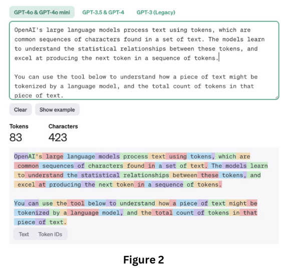

Table of Contents |
|
|---|---|
| Abstract | |
| Introduction | |
| Lyrical Generation | |
| Vocal Generation | |
| Generating the Music itself | |
| Legality of AI-generated music | |
| Conclusion | |
| References | |
This page explores the role of generative AI in music creation focusing on key components such as Lyric Generation, vocal synthesis and audio/wave synthesis. We explore how chat GPT works to generate lyrical content and how technologies like Tacotron 2 and WaveNet are used to generate vocals and audio through waveform synthesis. We will also explore the legality of using this technology for commercial music purposes and whether this violates copyright laws or the right of publicity.
Since the release of Chat GPT by open AI in 2022, artificial intelligence has been the hottest topic when it comes to technology, and has been rapidly implemented into several different industries, an example of which - the music industry. From generating fully recorded, mixed and mastered songs of any genre, to replicating the vocals of reputable artists, let's break down exactly how generative AI is used to create music, and explore the potential uses and legal concerns of this technology. The current and most popular AI music generators on the market are Soundraw, Soundful, Suno.ai and Mubert . Like in Figure 1, these AI’s generate music from a text input from the user, where the user describes the genre, lyrical theme and tempo of the song they desire. Generating a song requires 3 main components, Lyrical Generation, Vocal Generation and generating the soundtrack itself, which Suno manages to do all in one go. But let’s look at each process in detail
Most of these AIs use their own custom built versions of Chat GPT. GPT is a Generative Pretrained Transformer model (Harry Guinness, 2024), which is a language model trained across the large database of the internet, and any other publicly available datasets or pieces of information. After analyzing several lyrics from the internet, Chat GPT would consider the grammar, semantics, context, style and genre and generate lyrics that would then be inputted into the Speech/Audio Generator. First, the user’s sentence/prompt is broken down into smaller chunks called ‘tokens’, which are chunks of text encoded as a vector as in Figure 2. ChatGPT uses a transformer model to read every word in the sentence at once, and compares each word/token to the other by giving each word an “attention score” from 0 to 1. Words with a similar attention score, typically correlate in some way. Attention mechanisms help the model focus on certain words and understand the holistic subject of the sentence, for example it would be able to understand the meaning of the word “bank” based off of the surrounding text, either like a ‘river bank’ or a ‘financial bank’. Once a full set of lyrics is generated, the model outputs the final sequence of tokens as text, which could then be passed onto a Speech/Vocal Generator to turn the text into audio.

Once the lyrics of the song are generated through a Large Language Model or similar, AI voice cloning is used to replicate the vocals of a chosen artist and a text-to-speech model would be used to bring those lyrics to life. AI Vocal generators use models similar to that of one called Tacotron 2 - a Text-to-Speech model that converts text into natural sounding speech, to generate vocals from a text input, so let’s break down how Tacotron 2 works.
There are many platforms such as Mureka.ai and Suno.ai that can be used to generate songs from scratch, given some prompts on genre, topic, tempo and lyrics from the user. But how exactly do these platforms generate the soundtrack ?
Just like in generating the AI vocal and lyrics, music generating AIs start by scraping their data from publicly available datasets and online repositories and user contributed data. This includes audio files, MIDI files and ABC Notation. An example of such datasets is ‘MusicCaps’ which is a dataset containing 5,521 music samples of which is labeled with an English aspect list and a free text caption written by musicians. The instrument choice, tempo, meter and key are provided by the user. WaveNet uses convolutional neural networks to make predictions influenced by all previously seen observations of the waveforms it has analysed and generates new waveforms that are iterations of the previous (Rachel Chen, 2017).
Copyright law actually doesn’t directly protect a singer's voice, but rather the Right of Publicity which is the right to control the commercial use of their name, likeness, or voice. This means that the artist has the right to claim royalties on the song and even have it taken down (The IP Press, 2024).
We’re still a long way away from fully replacing singers and musicians. A lot of these models create music that sounds generated, and lacking human feel, but as the internet grows, AI models will acquire more data to train on and become better.
Available at : https://zapier.com/blog/how-does-chatgpt-work/
(Accessed date: 24 November 2024)
Available at : https://medium.com/@swilliam.productions/text-to-speech-with-tacotron-2-573986c42124
(Accessed date: 27 November 2024)